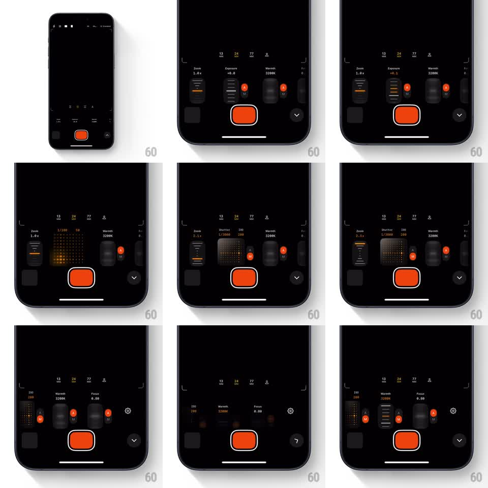

Media
Frame-by-frame

Rebuild this interaction 1:1: OpenCam's manual control deck - springy staggered control pods (Zoom, Exposure, Warmth, Shutter, ISO, Focus) that expand into scrubbable dials and a 2D shutter/ISO grid, all over a live dark viewfinder.

Rebuild this interaction 1:1: OpenCam's manual control deck - springy staggered control pods (Zoom, Exposure, Warmth, Shutter, ISO, Focus) that expand into scrubbable dials and a 2D shutter/ISO grid, all over a live dark viewfinder. ## Integration Integration: stack-agnostic spec - springs given as stiffness/damping, timed motions as duration + curve; map every value to your framework and animation library of choice. ## Scene Black viewfinder with corner brackets and focal-length markers (13, 24, 77) at top. A control deck above the big orange record button: pods for Zoom (1.0x), Exposure (+0.0), Warmth (3200K), Shutter (1/3000), ISO (200), Focus (0.80), each with an A/M auto toggle (orange A); a chevron button expands/collapses the deck. ## Motion spec Pattern: springy staggered control pods with scrub dials and a 2D grid pad. - Tapping the chevron expands the deck: pods stagger in left-to-right (40ms apart, spring ~320/18, from translateY 16pt + scale 0.9); collapsing reverses the stagger. - Dragging a pod vertically scrubs its value 1:1; the pod's value readout updates live (tabular numerals) and its fill level tracks (orange indicator line). - The Exposure pod expands into a 2D pad: a dotted grid where dragging X scrubs shutter speed (1/100 - 1/3000) and Y scrubs ISO (50 - 3200), the active cell glowing orange; the pad springs open (scale 0.7 -> 1, spring ~300/16). - Tapping an A/M pill toggles auto: the pill flips (scaleX 1 -> 0 -> 1, 180ms), swapping A and M in orange/gray, and the pod dims 40% in auto. - The focal markers (13/24/77) highlight the active lens (orange, 150ms crossfade) as Zoom crosses its range. - The record button presses with a squash (scale 1 -> 0.88 -> 1, spring ~380/16). ## Calibration - Pods are dense but legible: value under label, tick marks on the pod face. - Deck expansion never covers the viewfinder's center - pods live in the bottom third. ## Reduced motion Deck fades in fully formed (200ms); the 2D pad fades instead of springing. ## Don't miss - The orange accent (auto pills, active values, record button) is the only color besides grayscale. - Scrubbing any pod stays live even mid-expansion animation.